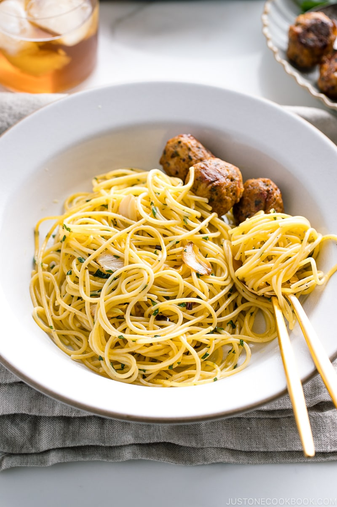

Shisho Garlic Pasta

Simple pasta, easy to make, and exceptionally delicious.
What is Shisho?
Shiso (紫蘇, しそ). It’s a leafy herb commonly used in Japanese cooking, equivalent to parsley or basil type of herbs in western cuisine.
Ingredients
- 1 Tbsp Diamond Crystal kosher salt (for cooking the pasta)
- 7 oz spaghetti
- 2 cloves garlic
- 1 dried red chili pepper
- 15 leaves shiso leaves (perilla/ooba) (plus more, to taste)
- 4 Tbsp extra virgin olive oil
- ½ tsp Diamond Crystal kosher salt
- 2 Tbsp reserved pasta water
Steps
- Cook garlic and dried red chili in the olive oil to infuse the flavor.
- Add cooked pasta.
- Add shiso leaves and toss everything together.